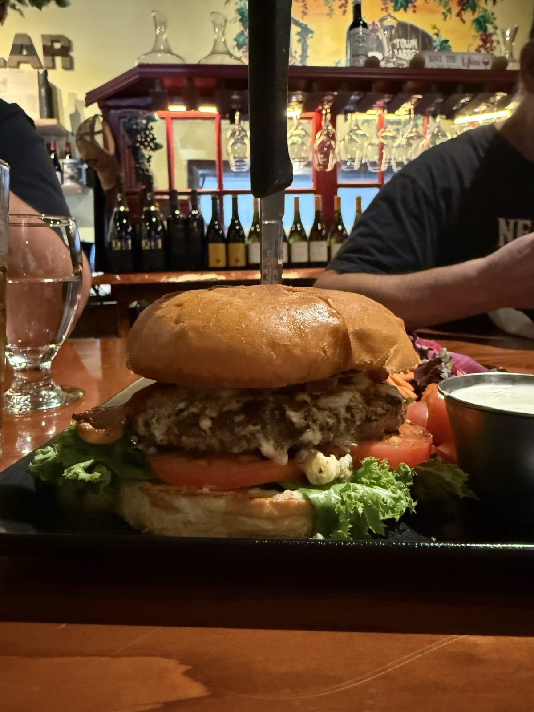
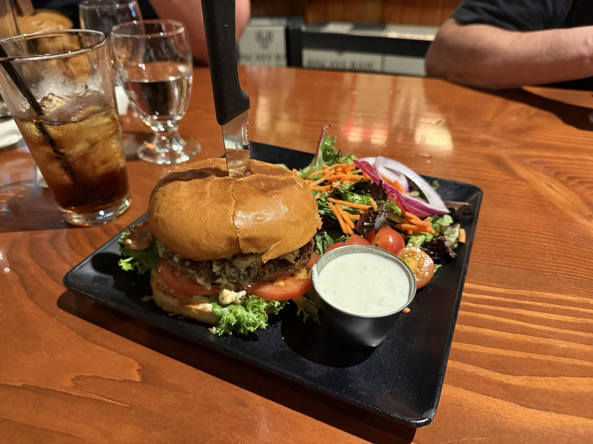
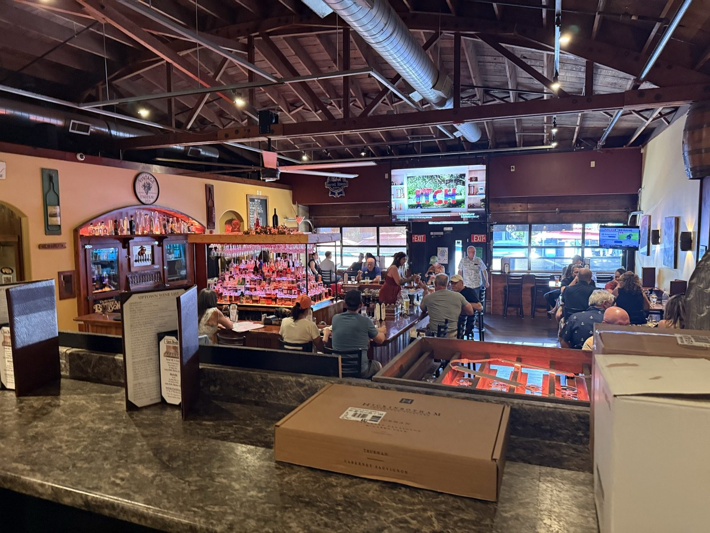
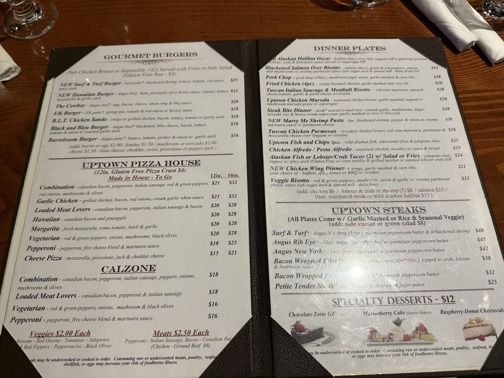
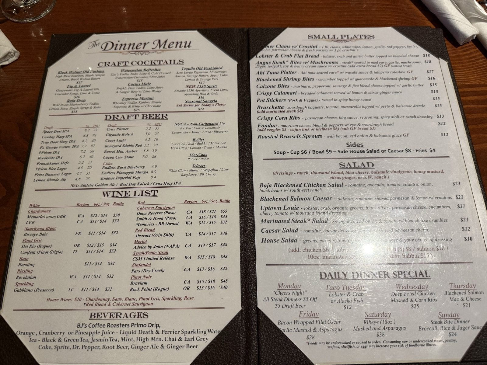

The Black and Bleu, and the Nicest Ladies in Town

There is a low black building on Main Street with UPTOWN BARREL ROOM in tall white letters across the front, a row of gooseneck lamps over the sign, and a fenced patio of picnic tables under red umbrellas out on the sidewalk. I have driven past it more times than I can count. On Thursday evening I finally went in, and I want to be plain about the result: the Black and Bleu Burger is eighteen dollars and it is the best burger I have had in a long time. This is a five, and fives on this site are supposed to be rare.
The burger
A thick Angus patty, blackened properly — not just grill marks but an actual dark, seasoned crust all the way across — with bleu cheese melting down the sides of it and collapsing into crumbles on the plate, bacon underneath, lettuce and a thick slice of tomato, on a soft egg-washed bun, with a knife driven straight down through the middle of the whole thing to hold it together. It comes with fries or a side salad and I took the salad, which arrived as actual spring mix with shredded carrot, red onion and cherry tomatoes rather than the usual apology.

That is what is on the plate. What I will add is the only verdict that matters: it is the bomb. I have been writing up burgers on this site for a couple of weeks now and I called the O-M-Cheese Burger at Applebee's one of my favorite burgers anywhere, which I stand by. That one got four stars. This one gets five, and the difference between those two numbers on my own scale is the difference between going back when I happen to be nearby and getting in the car on purpose to go. I would get in the car.

The nicest ladies in town
Here is the part I most want on the record. The servers here are the nicest ladies in town. Not nice in the trained, scripted way that a chain teaches — nice in the way that makes you feel like you picked the right place to sit down. It changed the evening, and it is a large part of why the number at the top of this entry is a five rather than a four.
So treat them right.
I mean that as an instruction. Tip them properly, be decent to them, and don't be the table that makes their shift harder. Good service is not free — somebody is standing up all night producing it — and the people doing it here are doing it well.
The room
It is a wine bar first, which the front of the building tells you before you get in: Uptown's "Wine" Hangout, Cellar & Retailer. The back room is a proper cellar — walls of bottles on open shelving, a long communal table down the middle, glassware hanging over a red rack, and a painted mural of a barrel and a wine glass with EST 2018 under it. The main room in front is bigger and louder in a good way: high open trusses and ductwork overhead, a full bar with the bottles lit from behind, televisions on, and on a Thursday evening at half past six, most of the seats taken.

What else is on the menu?
More than the name suggests, and much more than I expected from a place I had filed in my head as a wine bar. There are seven burgers, from the plain Barrelroom Burger at $16 up through an Elk Burger and a Black and Bleu at $18, a Cowboy with an egg and an onion ring on it at $20, and a Surf & Turf with blackened shrimp on top at $25. There is a whole steakhouse behind that — Angus rib eye, New York, a bacon-wrapped filet Oscar, $25 to $48 — plus house-made pizza and calzones, small plates, and a different dinner special every night of the week. Monday is "Cheers Night," $5 off every steak dinner and $5 draft beer, which is the one I would plan around.


Is the Uptown Barrel Room worth going to?
Yes, and not only if you are already on that end of town — which is the whole distinction between a four and a five here. Go for the Black and Bleu. Sit in the front room if you want the noise and the bar, or in the cellar at the back if you want to hear the person across from you. Either way you will be looked after by somebody who is good at it.
The practical bit
The Uptown Barrel Room — 2011 Main St, Vancouver, WA 98660, in Uptown Village, a few blocks up Main from downtown proper. 📍 Get directions
Hours: lunch and dinner Monday through Sunday, with weekend brunch Friday, Saturday and Sunday 9am–1pm — off the sign over the patio.
Worth knowing: the Black and Bleu Burger is $18 and comes with fries or a side salad; a gluten-free bun is $3 and you can sub chicken or an Impossible patty for $2. It is a wine bar and a retailer as well as a restaurant, so you can drink well here and also leave with a bottle. There is sidewalk seating under the umbrellas if the evening is behaving.